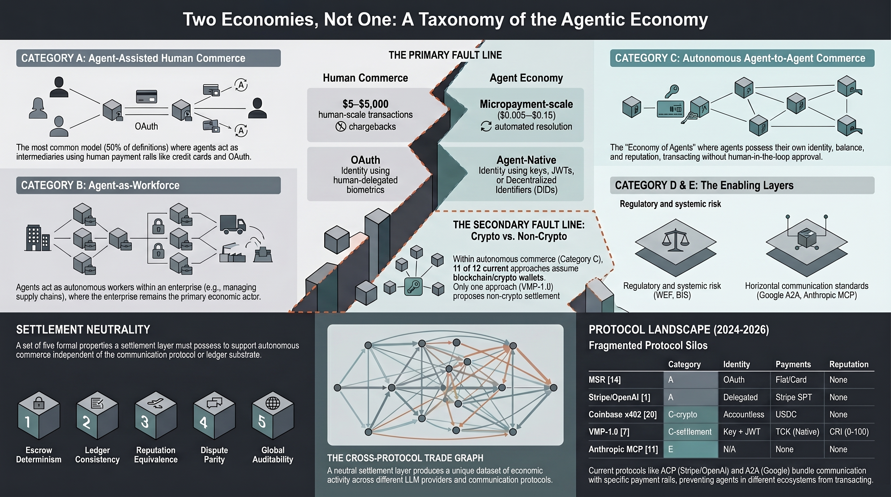

Last week I sat down and counted. Fifty-one sources use the term “Agentic Economy.” Microsoft Research. Sequoia Capital. The Bank for International Settlements. Coinbase. Stripe. The World Economic Forum. Gartner. At least forty others.
They do not mean the same thing.
Some mean a human buying a plane ticket through an AI assistant. Some mean an autonomous agent hiring another agent to translate a document, verifying the output against a schema, and settling payment — no human involved. Both get called “Agentic Economy.” The difference between the two is not a nuance. It is a structural fault line.
I spent three weeks surveying every definition I could find — published between 2021 and March 2026. Companies, VCs, central banks, academics, protocol designers. The result is a taxonomy with five categories and two fault lines that I believe clarifies what the field actually looks like today.
The five categories
Category A — Agent-assisted human commerce. The agent is an intermediary. The human is the economic actor. Stripe and OpenAI’s Agentic Commerce Protocol live here. So do Visa, Mastercard, McKinsey, and about a dozen others. The agent helps you buy things. The credit card is still at the end of the chain. This is roughly 27% of definitions.
Category B — Agent-as-workforce. The agent replaces a human in a task — writing code, analyzing data, scheduling meetings. Gartner and Sequoia live here. The agent does work, but it doesn’t transact autonomously. Someone still pays the API bill. About 16%.
Category C — Autonomous agent-to-agent commerce. Agent A hires Agent B. No human in the loop for the transaction itself. This is where things get interesting — and where the second fault line appears. Of twelve approaches to autonomous settlement that I found, eleven assume blockchain. One does not. That 11:1 ratio is, I think, the most striking finding in the paper. About 24% combined.
Category D — Analytical and regulatory. The World Economic Forum, the BIS, the OECD. They’re studying the phenomenon, not building it. About 14%.
Category E — Infrastructure and standards. Google’s A2A, Anthropic’s MCP, IEEE 7012. Protocols that enable agent communication but don’t handle the economics — settlement, reputation, disputes. About 20%.

The two fault lines
The first separates commerce for humans (Categories A and B) from an economy of agents (Category C). Most of the money, most of the press coverage, and most of the protocols sit on the human side. The agent side — where machines transact autonomously — has almost no infrastructure.
The second fault line sits inside Category C itself. The 11:1 split between blockchain-native and non-blockchain approaches to agent settlement. Eleven teams assumed that autonomous agent commerce requires a distributed ledger. One — ours — assumed the opposite: that a centralized ACID ledger with escrow, reputation, and deterministic validation is simpler, faster, and cheaper for micropayments between agents.
Whether we’re right about that is an empirical question. The taxonomy paper doesn’t argue for either side. It maps the territory.
Why this matters
When a VC says “we’re investing in the Agentic Economy” and a central bank says “we’re concerned about the Agentic Economy” — they are talking about different things. Category A is a checkout optimization. Category C is a new economic system. The risks, the opportunities, and the infrastructure requirements are completely different.
The paper surveys 57 definitions, classifies all of them, and formalizes a concept I’m calling settlement neutrality — the architectural property that allows a settlement layer to work regardless of which communication protocol the agents speak. MCP, A2A, REST — the escrow doesn’t care.
If you’re building in this space — or investing, or regulating — the taxonomy gives you a map. Use it, disagree with it, extend it. That’s why the spec is CC BY-SA 4.0.
The full paper is open-access on Zenodo: doi.org/10.5281/zenodo.20039387
It is one of three papers I published this month. One covers reputation scoring for autonomous agents. Another addresses why automated quality verification is mathematically impossible — and what to build instead.
Cheers from Madrid,
René